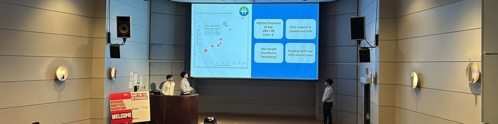
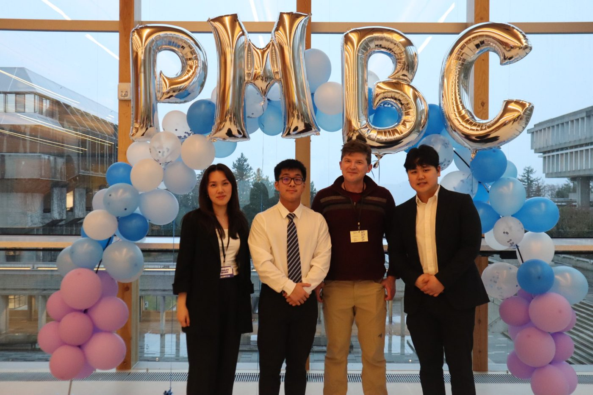
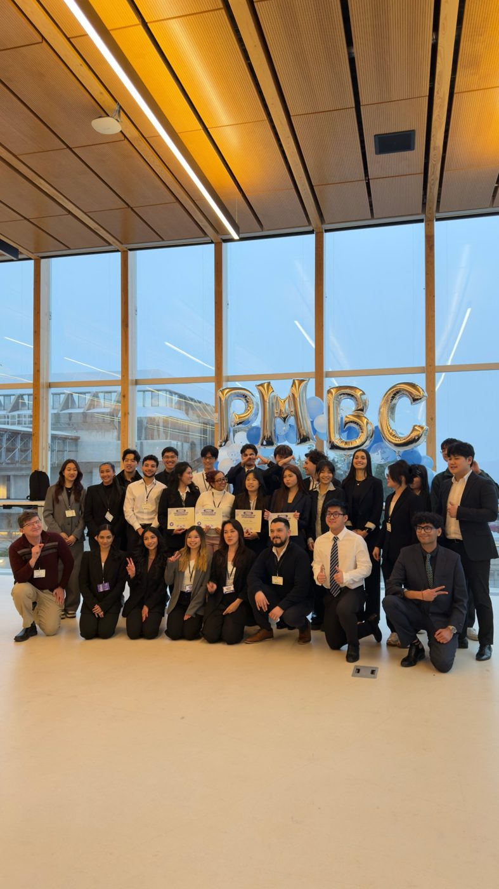
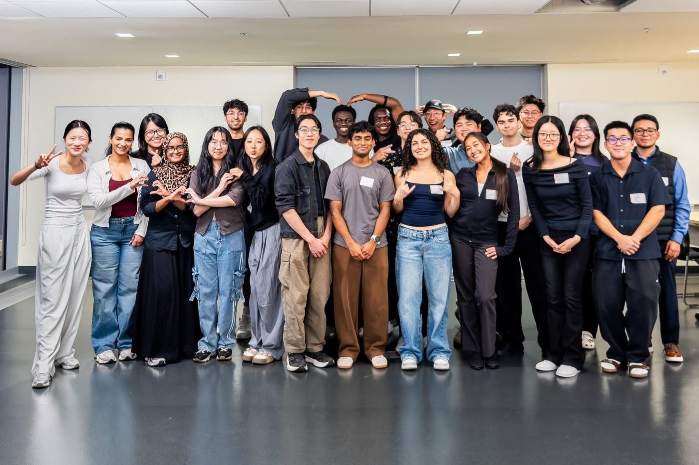
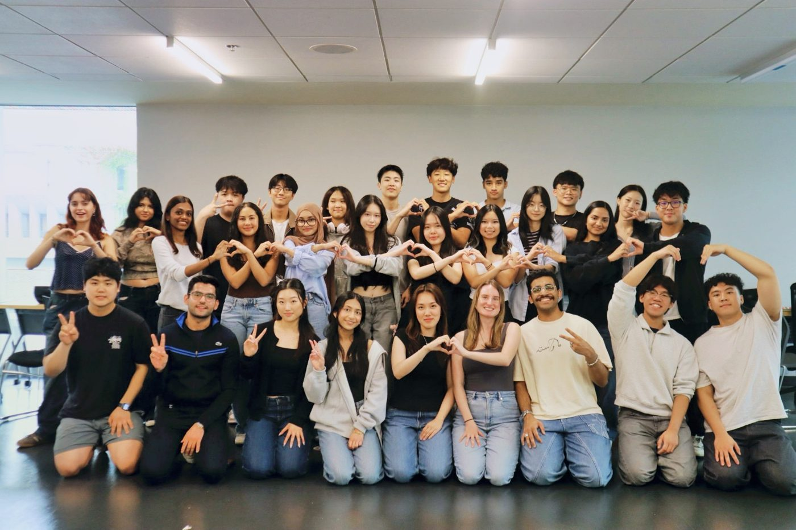
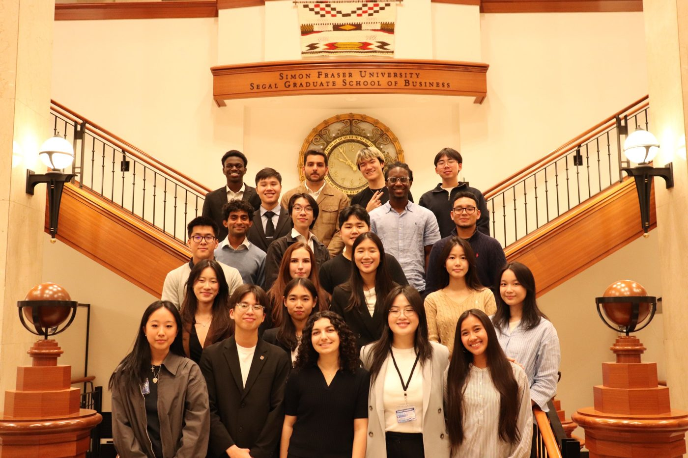
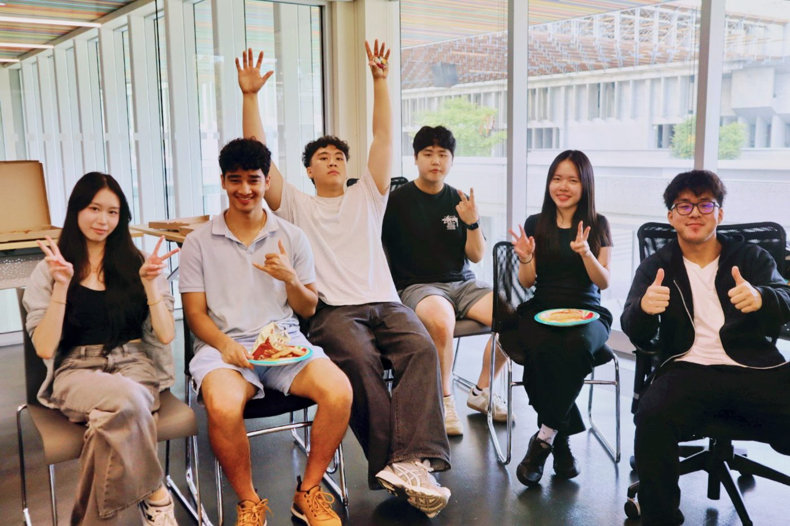
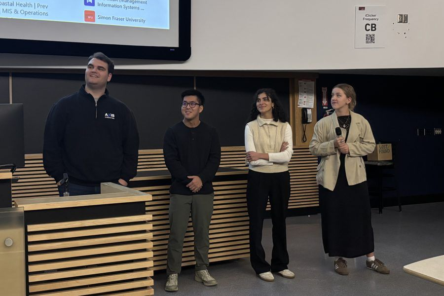

I map how work gets done, find where it breaks, and build the automation or process that fixes it.
BBA in Operations and MIS at SFU Beedie, graduating June 2027.
5,000+staff tracked by a compliance automation I rolled out at VCH
~$40Kin potential shipping savings identified at SignalChem, with actual savings already coming in
3rd of 21teams, SFU Business Analytics Hackathon
About
I like finding the slow, manual parts of how work gets done. Two co-ops put me on both sides of it:
counting shelves in a biotech lab, then rolling out automations at a health authority.
During the BC nurses' strike I spent a week as a porter at Vancouver General Hospital. Pushing patients
through halls I had only seen on a screen changed how I think about the systems I build.
The people using them are the point.
Journey
2020
Lead Cook, Cactus Club Cafe
July 2020 to January 2023 · Burnaby
My first job. I started in grade 10 and stayed two and a half years.
2024
Food Service Lead Hand, City of Burnaby
March 2024 to present · Burnaby Mountain Restaurant
Still in a kitchen, alongside school.
2025
Procurement Co-op, SignalChem Biotech
September 2025 to April 2026 · Richmond, BC
Ran procurement for 6 lab teams and 400+ purchase requests, negotiating discounts on 80% of purchases.
Found nearly $40K in potential shipping savings. Case study below.
Rebuilt the inventory room with an 8-step shelf count and reorder points that keep 3 months of critical supplies on hand.
2026
Business Analyst Co-op, Vancouver Coastal Health
May 2026 to September 2026 · Data & Analytics, Process Improvement
Rolled out a compliance automation across six departments and tested an invoice automation. Both are case studies below.
Wrote the guides for a new mileage and parking reimbursement process, helping cut processing time by 60%.
Built an org-wide Copilot library of 40+ role-based prompts and halved the time to document as-is processes.
2027
What's next
Graduating in June and looking for a business analyst or process improvement role.
Case studies
5,000+
staff tracked across 6 departments
Vancouver Coastal Health · Automation
LearningHub compliance automation
Mandatory training across 1,000+ courses, now tracked automatically and run by the business.
Read more
Problem
Six departments had to track mandatory training for 5,000+ staff across 1,000+ courses.
Approach
I owned the rollout from discovery through hypercare. I mapped as-is and to-be processes as Visio swim lanes, set up monthly compliance reporting for department leads, and wrote the user manual and handover agreement so the business can run it without developer support.
Result
Compliance is tracked automatically across six departments, and the solution was formally handed over to the business.
RPA · Excel · Visio · SharePoint
~80%
less manual invoice processing, estimated
Vancouver Coastal Health · Testing
Invoice processing automation testing
I checked 1,200+ invoices against an automated model so it could be trusted at scale.
Read more
Problem
An automated invoice model had to be tested before it could be trusted at scale.
Approach
I reviewed 1,200+ invoices against the model's output and built a test tracker to log errors, spot patterns and find root causes. Results for the facilities category went into retraining the model. I also ran check-ins with teammates and showed them how to document edge cases consistently.
Result
An estimated 80% cut in manual processing time, and better training data for the next version.
Excel · PivotTables
~$40K
in potential shipping savings
SignalChem Biotech · Analysis
Carrier cost analysis
I analyzed 557 international shipments and modeled a switch to DHL. The switch went ahead.
Read more
Problem
International shipping went through UPS and FedEx with no clear cost comparison.
Approach
I analyzed 557 international shipments in Excel, compared carrier rates and modeled the cost of switching to DHL.
Result
Nearly $40,000 in potential savings identified. The switch to DHL went ahead, and actual savings are already coming in.
Excel
~$102M
in projected savings
SFU Business Analytics Hackathon · 3rd of 21 teams
BC Hydro supply chain resilience
We simulated a 25% tariff on BC Hydro's supply chain and recommended where to re-source.
Read more
Problem
How exposed is BC Hydro's supply chain to tariffs and supplier risk?
Approach
We simulated a 25% tariff across supply categories and analyzed supplier locations, lead times and geopolitical risk in Excel and Tableau. We found a 207% rise in U.S. imports from 2021 to 2024 and recommended sourcing switchgear from Germany and diversifying with 200+ Canadian suppliers.
Result
About $102M in projected savings and 3rd place overall out of 21 teams.

Presenting our BC Hydro analysis at the hackathon.
Excel · Tableau
2 kitchens
one shared ordering system
Supply Chain Edge · SFU Beedie
Scaling BAK'D to two locations
Our team gave a growing cookie shop a plan to run ordering, suppliers and recipes across two kitchens.
Read more
Problem
BAK'D was growing from one location to two, and its ordering, supplier and recipe routines were built for one kitchen.
Approach
I covered the customer and sales analysis that showed where production mattered most. The team built three recommendations on it.
Result
One live Google Sheets inventory tracker shared by both locations, combined supplier orders to reach volume pricing, and a recipe master book to keep both kitchens consistent. We presented to BAK'D in July 2026.
Google Sheets
At Beedie
Vice President
SFU Management Information Systems Association · April 2026 to present
10directors and their teams
60+club members
250+students connected with 80 industry professionals
$5Kin event funding, a 25% increase
We run four flagship events. I pitched the club's plan to SFU Beedie to win that funding, and built onboarding for new directors, including role documents for Corporate Relations and Strategy.






PMBC 2026, team socials and club events with MISA.
Peer panel speaker, BUS 300
Fall 2026 · SFU Beedie School of Business
Professor Jason Ho invited four senior business students, including me, to speak to his BUS 300 class of about
300 students. Our main advice was not to chase an opportunity just because everyone else is. Take time to work
out what you actually want.

BUS 300 peer panel. I'm second from left.
SFU Community Leader
Fall 2025 to Summer 2026
Ran campus events alongside co-op.
Program Coordinator, Start2Finish
February to June 2024 · Running & Reading Club
Led discussions and activities with kids, and mentored high school volunteers in literacy support.
Also at Beedie
Launch Leader, Fall 2025
Moderator, Beedie Summit Conference, Fall 2025 and Spring 2026
Moderator, BUS 201/202 Case Competition, Fall 2025
Timekeeper, Elite Case Comp 2026
Top 10 finalist, BUS 336 Data Analytics & Visualization Hackathon